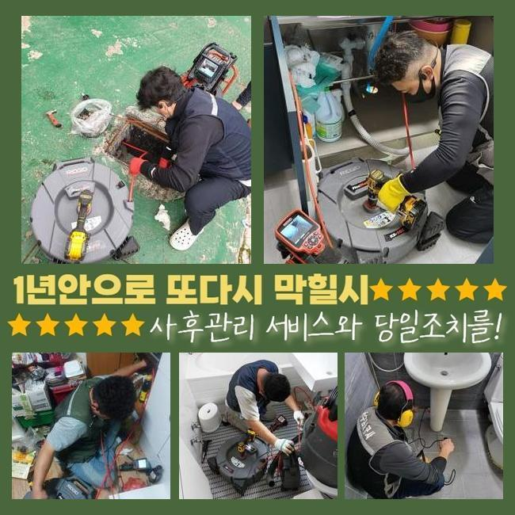
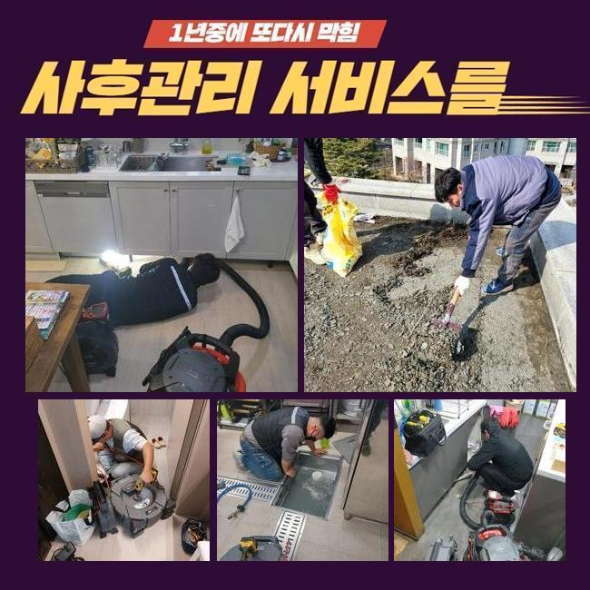
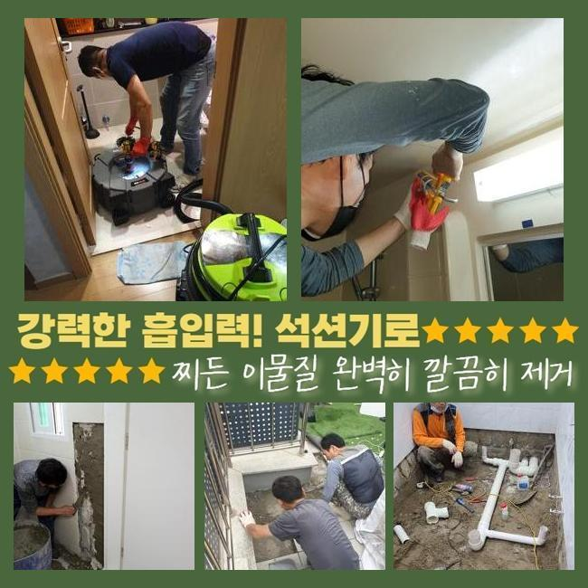
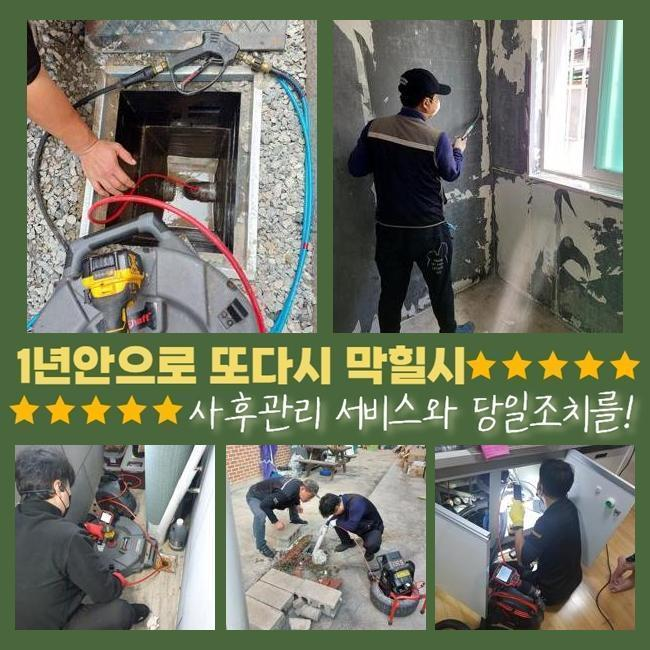
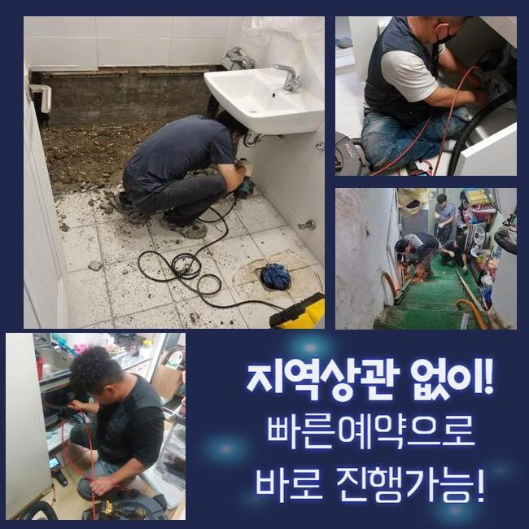
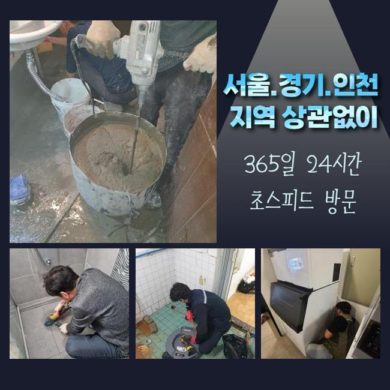
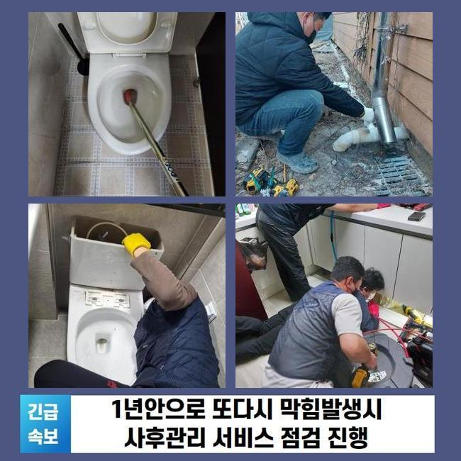

🏠 이천 증포동세탁실막힘 마장면 집수정청소 설비공사
용인 싱크대막힘 전문 시공 후기

📋 작업 개요
- 위치: 용인
- 서비스 유형: 싱크대막힘, 하수구막힘, 배관막힘, 집수정막힘, 뚫는업체, 배관청소, 고압세척, 설비공사
- 작업 일시: 2025. 4. 6. 11:51
- 업체명: 하수구수사대 (010-5615-2118)
🔍 문제 상황
이천 증포동세탁실막힘 마장면 집수정청소 설비공사
어느장소든 배관이 막히면 신속히 내방하여 처리해내는 전문가입니다
많은분들이 혼자서 직접 처리하려고 할때 배수구 클리너나 락스같은 것들을 활용하실거에요
클리너같은 것을 사용하면 하수구안에 쌓여있는 오염물질들을 소거하는데 유용할수는 있어요
그치만 이러한 방법들을 이용해봐도 제거되지않는 이물질이 있습니다
대표로 여러가지의 오염물이 덩어리형태로 굳게되는 석회물이에요
석회물질의 경우에는 내시경장비를 사용하여 이물의 지점과 형태를 정확히 파악하고 알맞은 방법대로 제거해주는 작업이 필요한데요
전문가에게 의뢰했을때 어떤방법을 통하여 굳은 오염물을 없애는지 작업사례를 통하여 공개해볼게요
방문했던곳은 가정내에서 발생된 배관막힘 건이에요
욕실바닥부분 배수상태가 느려졌다고 하시면서 연락주셨어요
저흰 고객께서 말씀하신것과 문제의 배수관을 살피면서 원인파악에 돌입했죠
고객분은 이틀전부터 배수상황이 연속적으로 더뎌지기 시작했으며 퀴퀴한 악취또한 동반된 상태라고 전해주셨죠

🔎 원인 분석
💡 전문가 진단: 정밀 진단 장비를 사용하여 슬러지의 고착 여부를 판명하고 타격/세척 작업을 실시했습니다.
셀프로 뚫기위해 시중에서 구매한 용액을 통해 세척하셨다고 하셨는데요
그렇지만 냄새의경우 처리되지않고 배수상태도 원활하게 돌아오지 않으셨죠
시간이지날수록 배수상황은 심각하게 막혀버려서 신속하게 해결해달라고 의뢰주신 거에요
의뢰자분이 말씀해주신 부분들과 현장상황을 보면서 원인 찾기에 돌입했어요
악취문제가 발현된 막힘현상의 경우에는 막히게된 원인에 대하여 자세하게 알아내는것이 중요해요
석션장비로 넘친 하수를 흡입해준뒤 장착된트랩을 분리하기 시작했어요
배수구주위를 들여다봤지만 내시경없이는 원인파악이 불가했죠
배관안을 확인해주는 하수도내부 촬영장비를 투입해봤어요
촬영기가 하수구속으로 투입하자마자 통로에 오염물이 모니터로 확인됐죠
확인했지만 막힘정도를 유발시킬 정도가 아니어서 조금더 깊히 주입해보니 막힌원인에 대해 알아낼수있었죠
머리칼과 샤워용품 찌꺼기들이 뭉쳐버린 슬러지상태의 고착물이었어요
하수구안에서 퇴적된 잔해물은 배관안을 좁게하며 좁은통로로 오염물이 연속해서 쌓이면서 냄새문제도 발생한거죠

🔧 작업 과정
석회물질은 잔해물들이 뭉쳐지며 덩어리상태가 되버리는데 하수구를 막히게하는 가장 큰 원인인데요
날이가면서 더욱 단단해질수 있으며 제거과정에 대해서도 굳어있는 정도마다 차이가 있을 수 있어요
내시경을 통해 확인한 오염물은 크기상태와 굳은점이 심해보이지 않았기에 흡입기로 제거가 가능했어요
석션기의 경우 배관내에 쌓여진 오염물을 빨아들이는 기계라고 생각하시면 됩니다
저희들은 배관파손이 일어나지 않게끔 세심한 방법으로 청소하고자 카메라를 같이 투입하여 수리를 진행했는데요
내시경으로 살피면서 이물이 발견된 위치에서 석션기를 작동하여 오염물을 없앴어요
하수관 가장 안쪽까지 내시경을 투입하여 오염물들과 물때를 청소해줬죠
이물제거를 세세하게 진행한뒤 배관카메라로 한번더 하수구안을 체크하는것을 반복하여 진행했답니다
반복해보니 하수구안에 퇴적되어있던 기름때나 이물들이 완벽히 청소된것이 화면으로 보였습니다
이물질들을 제거해보니 심각한 악취현상도 줄어드는것을 확인할수있었네요
마치기전에 물빠짐이 어떠한지 살피기위해 수전을틀어 배수상황을 테스트했어요
많은양으로 이물질들을 제거했으므로 문제없이 흘러가는것을 확인했습니다
테스트과정까지 마친후에 철수했어요
앞전에 설명했지만 전문업체를 통해 해결하는것이 필요한것은 막힘이 발생된 연유를 확실하게 알수있어야 뚫을수있겠죠
굳은형태로 이루어진 오염물은 클리너로 없애기란 어렵답니다
혹시라도 방치하실경우 물이새거나 넘치는 현상들로 이어질수가 있으므로 신속한 해결이 요구된답니다
딱딱한 상태로 슬러지가 고착화 되었으면 석션기외에 다른장비가 필요합니다
샤프트기라는 장비로 석회물들을 분쇄할수있어 막힘상태마다 사용하는 기계들이 다를수있답니다
하수구가 막히게되면 주위에서 시도하는 셀프방식으로 뚫을수있다고 생각하실겁니다


✅ 작업 완료
이렇게 여러번 시도해봐도 물내려가는게 깔끔하지 않다거나 심각한 냄새도 배수관에서 동반되는경우 전문업체를 통하여 해결하시는게 좋아요
화장실이나 싱크대처럼 물활용을 많이하는 장소라면 정기적으로 검사하여 막힘증세들을 예방해주시는게 중요하답니다
혼자서 처리할수있는 과정을 간단하게 알려드리자면 거름망이나 하수구트랩을 설치해서 악취증세와 막힘현상을 예방해볼수 있답니다
공용시설처럼 많은세대가 밀집된 건물일경우 빠른 조치가 필요하므로 언제라도 맡겨주신다면 조속히 내방해드릴게요
작업과정들을 확실히 공개하고 있사오니 작업이 필요하실때 전화주신다면 세세하게 상담을 진행해드릴게요




⚠️ 주방 싱크대 배관 막힘 예방 수칙
- ✅ 기름기가 묻은 식기나 프라이팬은 설거지 전 키친타올로 반드시 기름때를 닦아내세요.
- ✅ 주기적으로 싱크대 개수대에 뜨거운 물을 가득 받아 한 번에 내려 배관 내부 기름을 씻어내세요.
- ✅ 배수구 거름망을 미세한 필터로 사용하시고 음식물 찌꺼기가 틈으로 새어 들지 않게 관리하세요.
- ✅ 베이킹소다와 식초를 뜨거운 물과 함께 일주일에 한 번씩 부어주면 배관 살균과 막힘 예방에 좋습니다.
💡 핵심 정리
- 확실한 장비 작업(내시경 점검 및 샤프트 스케일링)으로 원인을 뿌리 뽑습니다.
- 작업 후 1년 이내에 동일한 부위 재발 시 100% 무상 A/S 서비스를 보장합니다.
- 서울 · 경기 · 인천 전 지역에 24시간 언제든 긴급 출동할 수 있도록 항시 대기 중입니다.
❓ 자주 묻는 질문 (FAQ)
🚨 용인 싱크대막힘 문제로 고민이신가요?
정확한 원인 진단과 확실한 시공으로 재발 없는 해결을 약속드립니다.
24시간 긴급 출동 | 서울 · 경기 · 인천 전지역 | 1년 내 재발 시 무상 A/S